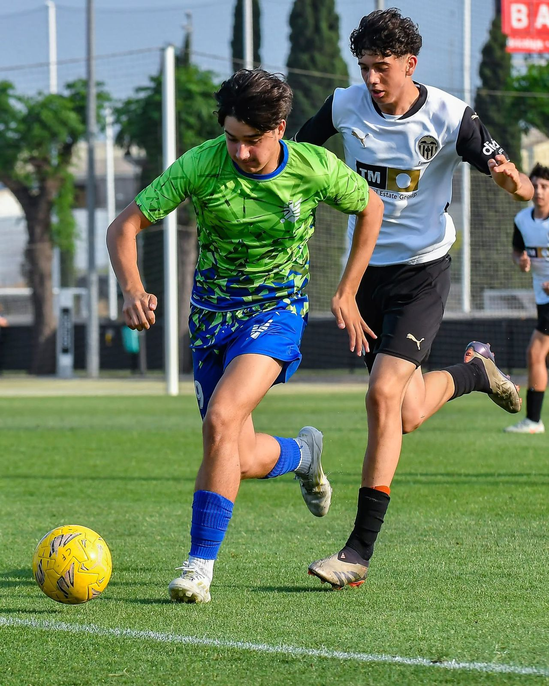
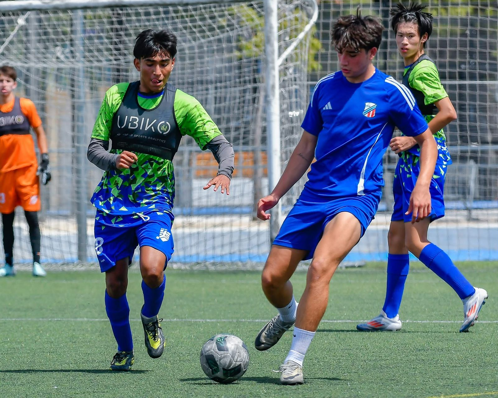
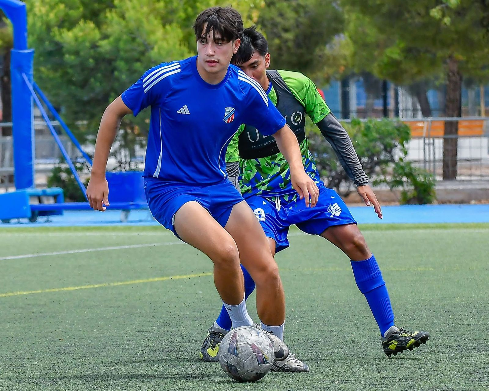

Analista enfocado en la estructuración de datos y toma de decisiones estratégicas. Fundo mi metodología de trabajo en la unión del rigor cuantitativo de los negocios y la disciplina inquebrantable del fútbol competitivo internacional.

Las métricas sin ejecución son solo números. El deporte de alta competencia me enseñó a convertir información en resultados inmediatos bajo máxima presión.
Formación universitaria en la Universidad Panamericana enfocada en modelado cuantitativo, análisis financiero elemental, estructuración de bases de datos y formulación de estrategias empresariales accionables.
Como delantero centro, la toma de decisiones ocurre en milésimas de segundo frente a defensas agresivas. Esta experiencia forja un temperamento sereno para resolver crisis operativas y cuellos de botella empresariales.
Experiencia real en el área de análisis de datos de empresa familiar, optimizando la gestión de información y acelerando los procesos de toma de decisiones.
Diseño de libros de cálculo estructurados, tablas dinámicas, formulación lógica multicriterio y plantillas automatizadas para el procesamiento diario de información comercial y administrativa.
Organización de registros desestructurados, depuración de anomalías e integración de fuentes dispersas para garantizar la confiabilidad y veracidad de las métricas clave del negocio.
Desarrollo de resúmenes de rendimiento para el cuerpo directivo. Traducción de datos complejos en resúmenes visuales directos y concisos para facilitar la toma de decisiones gerenciales.
Colaboración interdepartamental, gestión de activos y optimización operativa en empresa familiar. Detección temprana de ineficiencias y propuesta de soluciones analíticas fundamentadas.
Experiencia como delantero centro en el circuito profesional juvenil de México y torneos de prestigio internacional en Europa, compitiendo contra academias de primer orden mundial.
Participación como delantero centro en el circuito profesional mexicano. Formación en dinámicas tácticas de alta exigencia, régimen físico riguroso y responsabilidad de vestuario.
Desarrollo y tecnificación en España adaptándose al ritmo de juego europeo: transiciones rápidas, lectura espacial avanzada y toma ágil de decisiones con marcaciones cerradas.
Disputa de torneos juveniles internacionales de clase mundial (MIC Cup), compitiendo frente a canteras y clubes de la élite española como el Valencia CF.
Etapa formativa y de consolidación ofensiva en torneos metropolitanos de la Ciudad de México, ejerciendo liderazgo en el ataque y orientación al cumplimiento de goles y victorias.
Haz clic en cualquier imagen para abrirla en alta resolución y explorar los momentos clave de competición y preparación física.


Estoy disponible para colaborar en proyectos de analítica de datos, desarrollo de modelos cuantitativos e iniciativas de inteligencia de negocios.